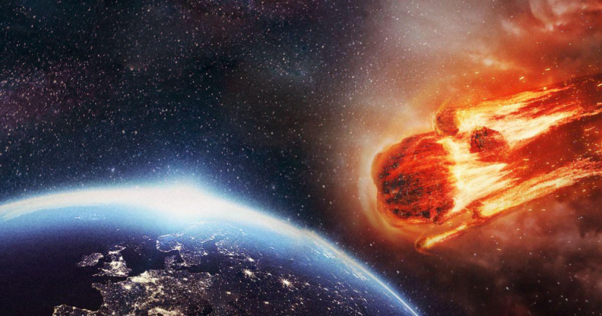

Історія об'єкта: Астероїд "Імпактор-X"

Відкриття та класифікація
Астероїд "Імпактор-X" був відкритий у 2025 році за допомогою телескопа Pan-STARRS. Класифікований як навколоземний об'єкт (NEO) групи Аполлона. Його діаметр оцінюється приблизно в 3 кілометри.
Перші розрахунки
Початкові астрономічні розрахунки вказували на невелику, але ненульову ймовірність зіткнення із Землею у віддаленому майбутньому (2070 рік). Це викликало міжнародну програму спостережень і уточнення його орбіти.
Поточний статус
Завдяки додатковим даним від обсерваторій NASA та ESA, траєкторія була уточнена. Поточні прогнози розділилися на два основні сценарії, які аналізуються нижче.
Порівняння прогнозів
| Аспект | Проліт мимо | Зіткнення |
|---|---|---|
| Ймовірність | Висока ймовірність прольоту без небезпеки. | Надзвичайно низька, але з високими ризиками. |
| Наслідки | Наукові дані, технологічні досягнення. | Можливе глобальне знищення екосистем. |
| Дії людства | Спостереження, дослідження, міжнародна співпраця. | Розробка систем відхилення й космічної оборони. |